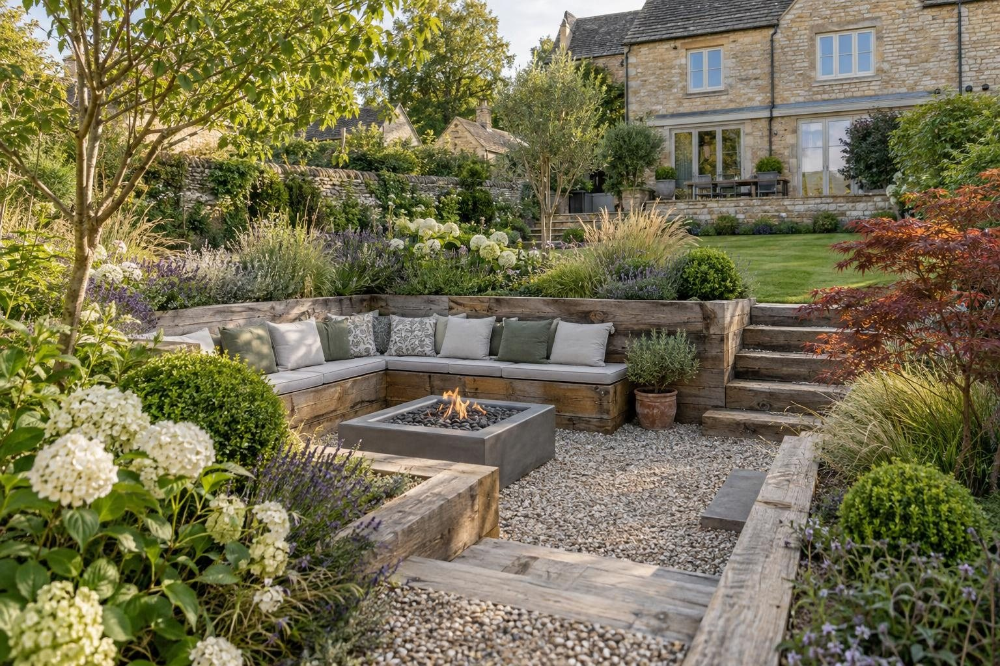
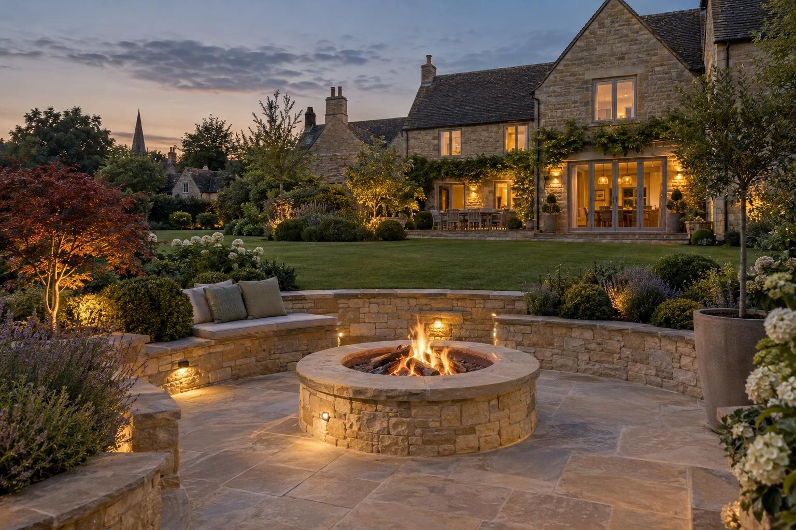

Fire pits & sunken seating in Cottesmore
Built-in fire pits and sunken seating for Cottesmore family gardens, designed to be easy to look after and drained for mixed ground.
A built-in stone or brick fire pit in Cottesmore typically costs £1,200–£2,000, and a fire pit with built-in seating from about £3,500. A full sunken seating area in Cottesmore is priced per job. Ground is the local variable: Cottesmore sits on mixed limestone and clay, drainage changes from plot to plot, and we dig a test hole before choosing a soakaway or another route for the water.
- Fire pit with seating
- From £3,500
- Planning
- Not normally needed
- Ground
- Mixed limestone and clay
- Guarantee
- 5 years, in writing
Our 2026 guide prices, all in. Your fixed price comes in writing after the site visit. Council fees checked October 2026.
Fire pits & sunken seating in Cottesmore
Family homes in Cottesmore often want a garden that works hard and asks little in return. A built-in fire pit with masonry benches fits that well: no cushions to store, no timber to treat, and a place to gather well beyond the summer. We build pits set into the patio, sunken seating with retaining walls and steps, and the drainage at the bottom that keeps the floor dry. Prices quoted here are guides, followed by a fixed written price after the visit.
The old centre has ironstone and limestone cottages with established gardens, while the later housing that makes up much of the village tends to have regular rear gardens with a lawn and a small patio. Kendrew Barracks, the former RAF Cottesmore, sits just outside the village. We also cover Market Overton, Barrow, Burley, Greetham and Thistleton, and design each garden from what we find on the day. Every plot gets its own drawing.
What makes Cottesmore different
Cottesmore sits on mixed ground at the edge of the limestone, and the North Brook rises nearby. In practice that means one garden drains freely while the next holds water, and we cannot tell which until we dig. For a sunken seating area this decides the design: a soakaway at the low point on free-draining ground, or a different route for the water on clay. Rutland's flood strategy traces the North Brook through the village, so plots near it get extra attention.
A typical Cottesmore job is a later family house with a lawn the children have worn thin. We replace part of it with a paved, slightly sunken seating area, build benches on two sides faced in brick or render to match the house, add a step down and set a lined fire pit in the middle, positioned well clear of the fence.
You can check any address on the Environment Agency flood map.
Sources: Rutland conservation areas · Rutland flood risk strategy.
Permissions in Cottesmore
- PlanningA fire pit or sunken seating area in a rear garden does not normally need planning permission. Keep fires a safe distance from fences, trees and buildings, and be considerate of neighbours: smoke can be a statutory nuisance. Listed buildings and the Cottesmore conservation area have tighter rules, so we check your address before anything is designed. Planning Portal: outbuildings
- TreesTrees in a conservation area need six weeks' notice before work, and protected trees need consent; both are free. Rutland County Council: tree works
- Design and priceWe measure up, check the ground and the planning position, and give you one fixed written price.
Rules checked October 2026.
What you get in Cottesmore
- Test hole on every plot, as ground changes house to house
- Masonry benches with no timber to maintain
- Fire pit placed clear of fences in smaller rear gardens
- Retaining walls built on proper footings with drainage behind
- A drain or soakaway at the bottom so a sunken area never floods
- Built-in benches faced in stone, brick or render to match
The specification
- Area set out and dug down
- Footings and retaining walls built
- Drainage and soakaway at the low point
- Paving laid to falls
- Benches, steps and fire pit built
- Five year workmanship guarantee in writing

“Really pleased with my new driveway. Beautifully finished, friendly professional workmen, would definitely recommend and will be using them again for the garden once other renovations complete.”
Driveway — Google review
“Absolutely great guys, job was done in good time and looks brilliant. No complaints, the driveway is immaculate. More work in the near future, thanks again!”
Driveway — Google review
Everything else we do here


Fire pits & sunken seating in Cottesmore: questions
How much does a fire pit cost in Cottesmore?
Do I need planning permission in Cottesmore?
Is a sunken fire pit area sensible with young children?
Why test the ground when my neighbour's garden drains fine?
Fire pits & sunken seating nearby
Request a site visit in Cottesmore
We measure up, check levels and drainage, and send a written proposal with the build-up, the programme and one whole price. No pressure and no follow-up sales calls.